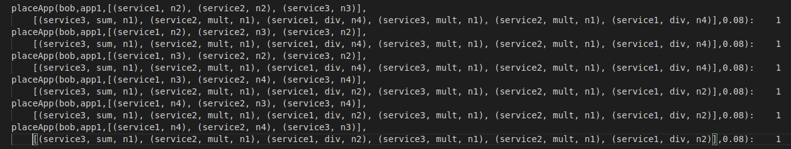

FogFaas

A Faas-compliant extension of SecFog
Outline
- Introduction and project objectives
- Main functionalities
- Extensions
- Example
- Conclusions
The problem: securely deploy a FaaS application on a network
- Fog computing is a big challenge for security.
- SecFog is a useful tool which allows to securely deploy an application on an infrastructure (i.e. to solve the Components Deployment Problem).
- What about the FaaS paradigm?
FogFaas
- FogFaas is a problog tool which allows to solve the CDP taking into account the FaaS paradigm.
- The basic idea is simple: an application is a list of services (orchestrators), a service is a composition of functions.
- Functions can be also triggered as needed.
Security: default options
- We provide functions a security label which depends on the labelling of parameters.
- The default labelling is \( \{l, \ s, \ ts \}\), with \(l \lt s \lt ts\).
- This can be easily defined with few lines of code.
- leq(default, l, s).
leq(default, s, ts). - labelF(default, Args, ts).
labelF(default, Args, s) :- findall(X, ts(X, Args), []).
labelF(default, Args, l) :- findall(X, notPublic(X, Args), []).
notPublic(X, Args) :- member(X, Args),(ts(X);s(X)).
ts(X, Args) :- member(X, Args), ts(X).
×
Ok, but...
- What if we want to manage access from different countries?
- One might think to have a set of labels \( \{l, \ s_{eu}, s_{us}, ts_{eu}, \ ts_{us} \}\).
- In this case, we might have \(l \lt s_{eu} \lt ts_{eu}\) and \(l \lt s_{us} \lt ts_{us}\).
- Can we define that in FogFaas?
- leq(bob, l, s_eu).
leq(bob, l, s_us).
leq(bob, s_eu, ts_eu).
leq(bob, s_us, ts_us). - labelF(bob, Args, ts_eu) :- findall(X, isUs(X, Args), []).
labelF(bob, Args, ts_us) :- findall(X, isEu(X, Args), []).
isUs(X, Args) :- member(X, Args),(s(X, us); ts(X, us)).
isEu(X, Args) :- member(X, Args),(s(X, eu); ts(X, eu)). - labelF(bob, Args, l) :- findall(X, isSec(X, Args), []).
isSec(X, Args) :- member(X, Args),(isUs(X, Args); isEu(X, Args)). - labelF(bob, Args, s_eu) :- findall(X, euOrTS(X, Args), []).
euOrTS(X, Args) :- member(X, Args),(isUs(X, Args); ts(X, eu)). - labelF(bob, Args, s_us) :- findall(X, usOrTS(X, Args), []).
usOrTS(X, Args) :- member(X, Args),(isEu(X, Args); ts(X, us)).
×
Language core
- We provide basic constructs in order to define programs to be deployed.
- \(seq(P1,\ P2)\): sequential execution of two programs.
- \(whl(FId,\ P2)\): while loop.
- \(ife(FId,\ P1,\ P2)\): if-then-else.
- \(trc(P1,\ P2)\): try-catch block.
- \(par(FId1,\ FId2)\): parallel execution of two functions.
- \(FId\): function call.
- \( Fid \) identifies a function
- \(func(FId,\ Args,\ HwReqs,\ PReqs,\ TUnits)\)
Providing security
- The label of a program depends on the labels of its functions.
- According to the default lattice:
- a function can be labelled as \(low\) iff it has no secret or top secret arguments;
- a function can be labelled as \(secret\) iff it has no top secret arguments;
- a function can always be labelled as \(top\ secret\).
- Then low level information can always be "promoted" to a higher level, but not viceversa.
- The label of a program is the highest between those of its functions (more on type checking later!)
Secure deployment
- We want to deploy functions (services) only on nodes which meet certain security requirements.
- \(node(NId,\ OpN,\ HWCaps,\ PCaps,\ PFCaps,\ TUCost,\ Geo)\).
- We provide default security requirements, but users can define their own \(labelN\) predicate in order to customize the labelling.
- FogFaas also embed the trust model of SecFog to provide a trustness relation between an application operator (the deployer) and a network operator (the owner of a node).
- labelN(default, N, OpN, Geo, ts) :-
member(Geo, [eu,ch]),
firewall(N),
member(OpN, [amazon, azure]). - labelN(default, N, OpN, Geo, s) :-
member(Geo, [eu,ch,us]). - labelN(default, N, OpN, Geo, l) :-
member(Geo, [eu,ch,us,vat]).
×
Deploying an app
- Define a list of services, each one associated to a trigger which can be used to invoke its functions and requiring some capabilities.
- Associate an app id to that list of services.
- Deploy!
- func(sum, [x,y], 1, rust, 10).
func(mult,[y,x], 1, java, 10).
func(div, [z,w], 2, python, 20). - service(service1, triggerX, div, 1, [ubuntu], [us]).
service(service2, triggerY, mult, 1, [sql], [us]).
service(service3, triggerZ, seq(sum, mult), 1, [sql], [us]). - app(app1, [service1, service2, service3]).
- query(placeApp(bob, app1, SP, FP, Cost)).
×
What we get
-

- But...many features are still missing:
- communication between services;
- write/read on resources;
- a more secure type system;
- a real triggers modelling.